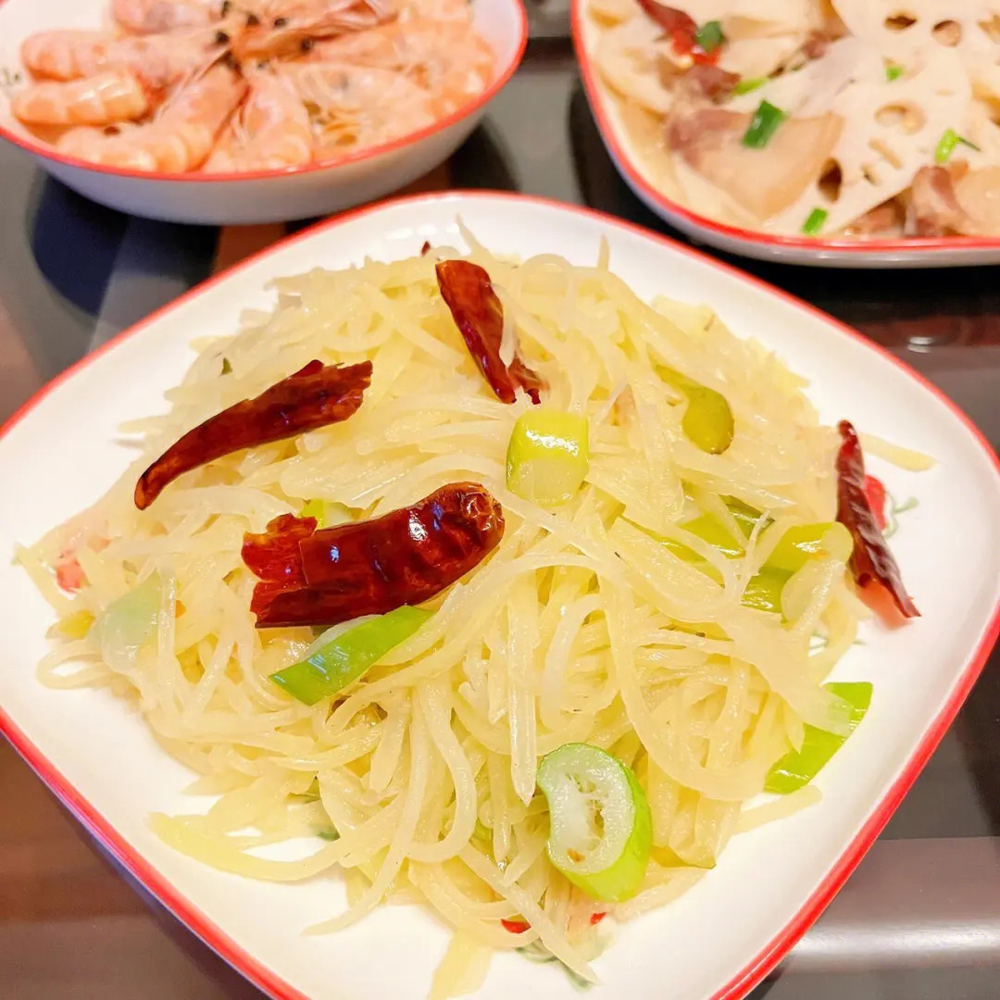

Recipe Detail
Recipe Detail
fried Potato Strips

Required ingredients
List of ingredients
- 2 large potatoes, peeled and cut into thin strips
- 2 cloves of garlic, minced
- 2 green onions, sliced
- 1 red bell pepper, cut into thin strips (optional)
- 1 tablespoon light soy sauce
- 1 teaspoon vinegar
- 1 teaspoon sugar
- Pinch of salt
- 2 tablespoons cooking oil
Other
-
- Difficulty level: simple
- Required time: 20min
Steps
- Soak the potato strips in cold water for about 10 minutes to remove excess starch. Drain and pat dry with a paper towel.
- Heat oil in a wok or large frying pan over medium-high heat.
- Add the minced garlic and stir briefly until aromatic.
- Add the potato strips and stir-fry for about 3-4 minutes or until they start to become tender.
- If using, add the red bell pepper strips and continue stir-frying for another 1-2 minutes.
- Add the soy sauce, vinegar, sugar, and salt. Toss everything to combine well and coat the potatoes evenly with the seasonings.
- Finally, toss in the sliced green onions and stir-fry for another 30 seconds.
- Transfer to a serving plate and serve immediately. Best enjoyed as a side dish or even a main with some steamed rice.